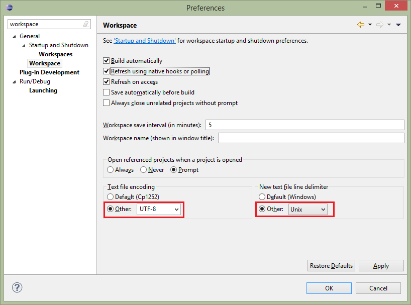

Everyone is invited to get involved with the EMFStore project. Before you plan any kind of contribution, it is a good idea to contact the project team.
- Writing bug reports
Please provide a short and concise explanation of the problem and a snippet to reproduce the issue, ideally a JUnit test case that outlines the expected behavior. You are also invited to enter feature requests. Please use Bugzilla to report bugs and feature requests.
- Commit Message Guidelines
We have the following commit message template:
(Bug <Bug ID> - <Bug Title>) | (TCI - <Fix>) <Commit Description>? Change-Id: <Generated Gerrit Change ID> Signed-off-by: <sign off name and email>
Instructions (Please continue READING):- TCI commits: For trivial code changes please use a TCI commit message. See list below for examples. If in doubt please discuss with reviewer.
- Normal Commits: For all other commits use a commit message starting with 'Bug'. Bug reports with Proper Titles: Before using a Bug title for a commit, committer must update the Bug title to a reasonable and descriptive title for the task they have worked on
- Commit Description: Additionally to the title, the commit message can describe briefly (2-3 sentences) how this commit fixes the bug from a technical perspective
- Multiple Commits for same bug: Of course you may use the same bug and therefore bug title for multiple commits and their message, in this case please provide a unique description
- Reviewers responsibility: The reviewer is responsible also for checking that the bug title is descriptive and reflects the committed change and that the description if any reflects the technical change
- JavaDoc
- NPE
- Version Update of manifest and pom
- anonymous to inner class Conversion
- Renaming local vars, e.g. because of typos
- Externalizing strings
- Use Gerrit to contribute to EMFStore
We use Gerrit code review so you can easily contribute to EMFStore and get a review for your changes. Please make sure that all your commits refer to a Bugzilla Bug.
- Providing a patch to fix a bug or add a feature
Please attach your patch to the bug report in question or create a new report using Bugzilla.
- Contribute documentation
If you found something that is not documented, please share your knowledge with other users. Please contact us, to find the appropriate place to add your documentation.
How to setup your IDE
- Step 1: Download and install Eclipse
Please use the Eclipse Modeling Tools from the Eclipse downloads section.
- Step 2: Additional Plug-Ins and Settings
Install Checkstyle Plug-In from either the Marketplace (Help->Eclipse Marketplace...) or from the Checkstyle Updatesite . All projects have a project specific checkstyle setting, so no need to set this.
Set the API baseline to the latest release. For this you need to download the release as a zip file and create a new baseline using Preferences => Plug-In Development => API Baselines.
All bundle contain bundle specific settings for formater, warnings and so on, so you don't need to set them. If you create a new bundle, please copy the .settings folder from an existing one
Install the "API Tools Execution Environment Descriptions" from the Eclipse Project Updates site.
- Step 3: Check-out the source via git
If you want to use git as an anonymous user (read-only) please use the following URLs:
https://git.eclipse.org/gitroot/emf-store/org.eclipse.emf.emfstore.core.gitIf you want to use Gerrit please use the following URL:
ssh://eclipse-id@git.eclipse.org:29418/emf-store/org.eclipse.emf.emfstore.core.gitIf you want to use git as a committer, please use the following URL:
ssh://committer_id@git.eclipse.org/gitroot/emf-store/org.eclipse.emf.emfstore.core.gitSelect the "develop" branch. The develop branch is used for development while the master branch contains tagged release versions of EMFStore that must not be changed once they have been released. Press "Select all" and proceed with the import.
Please refer to this tutorial to clone git repositories. Now, you can import the projects from the cloned git repository. See here to learn how to import projects from a git repository.
- Step 4: How to import and set the target
Once you have checked out the branch, you will see the following directory structure consisting of four directories:
bundles,features,testsandreleng. Each one of these directories serves a specific purpose:bundlescontains all EMFStore pluginsfeaturescontains all featurestestscontains all testsrelengcontains all release enginnering-specific assets
Now locate and open the emfstore.target file in the _target bundle imported from the repository. When it is resolved, set the target definition as the target platform. Please note that the resolution of the target platform may take some time the first time it is set.
- Step 5: Configure your workspace
-
Set the API baseline
To help detecting source changes that would break the API of EMFStore, we use the API tools provided by Eclipse. Therefore you'll need to set up an API baseline which Eclipse will compare your current workspace against.
To set up an API baseline, download the latest EMFStore release and open up your Preferences. Navigate to Plug-in Development > API Baselines. Select "Add Baseline", name your baseline meaningful and click "Browse" to select the root folder of your downloaded EMFStore SDK. Click OK and once the baseline is initialized, click Finish.
-
Set encoding and line delimiter
Navigate to General > Workspace and and set the Text file encoding to UTF-8 and the New text file line delimiter to Unix. 
-
Set the API baseline
- Step 6: Java 1.5 compatibility
As we want to be 1.5 compatible, you need to install the "API Tools Execution Environment Descriptions" from the Eclipse Project Updates site (already available as an update site) in Eclipse. If you need to create a new project, please ensure that:
- All execution environments are set to Java 1.5
- The API Errors/Warnings project specific setting Reference not defined in specified execution environment is set to Error
- Step 7: Start EMFStore
As a reference UI, we use the User Interface provided by EMF Client Platform (EMFCP). For testing purposes, you can use this example model. Import it into your EMFCP workspace.
Start the model with EMFCP by creating a run configuration. This run configuration will automatically also contain the example model from your developer workspace. To create a run configuration, select the Eclipse menu Run → Run Configurations.
Create a new run configuration and run the application org.eclipse.emf.ecp.application.e3.application, as shown in the following screenshot.

Now you can start your application; it should present you with an empty ECP workbench containing the example model.
Framework Developer Documentation
See the developer documentation.
Branching scheme
In our GIT Repositories we are using the branching scheme described here.
We have a master branch containing the last release. A development branch containing the current development state and (hopefully) some feature branches containing new feature developments.
So if you are a developer please commit on the develop branch in the future. If you develop a new feature please open a feature branch and merge it back to the develop branch when your feature is finished. Don't commit on the master branch as it should only contain stable release versions merged there by the release engineer.